开源大模型技术架构
12 项核心技术架构示意图 · 极简白底蓝图风格 · Higgsfield image2 medium 1k 1:1 生成
图 1 / 12 — MLA（多头潜注意力）
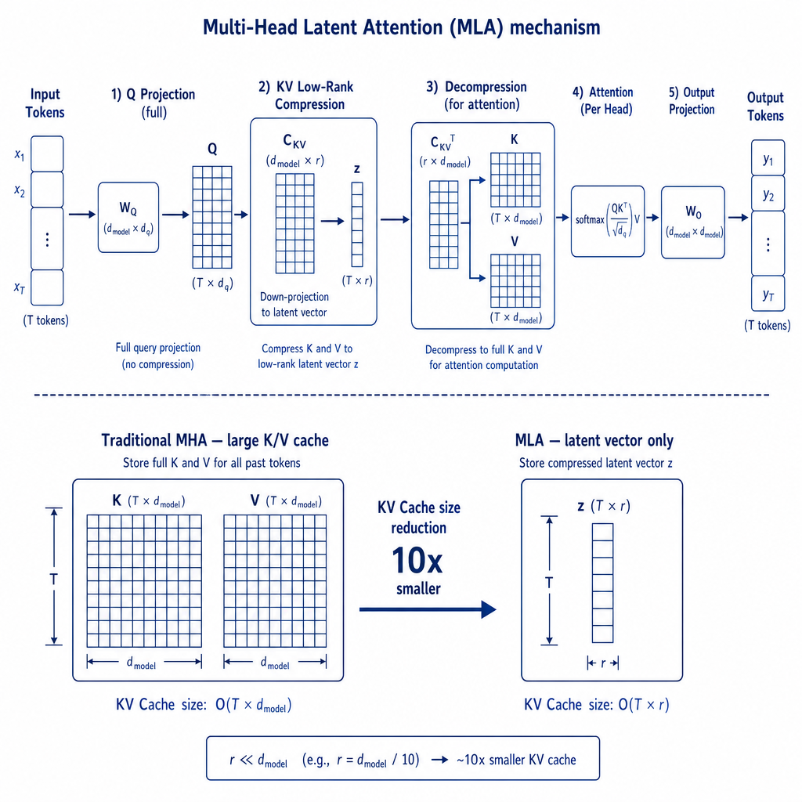
- 左侧：传统 MHA 完整 K/V Cache（大矩形）
- 右侧：MLA 压缩后的潜向量（小矩形）
- 低秩分解矩阵 C_KV
- 缓存大小对比标注 "10x ↓"
技术深度解读
问题背景：标准 Transformer 推理时，每生成一个新 token 都要为所有历史 token 维护完整的 Key 和 Value 矩阵（KV Cache）。以 7B 模型、4K 上下文为例，KV Cache 占用约 1.5GB；扩展到 128K 上下文，显存占用飙升至 48GB，成为长文本推理的核心瓶颈。
核心原理：MLA（Multi-Head Latent Attention）通过低秩联合压缩将 KV 矩阵压缩为一个小维度的潜向量 c_t^{KV} ∈ R^{d_c}，推理时只缓存潜向量而非完整 K/V。公式：$c_t^{\mathrm{KV}} = W^{\mathrm{DKV}} \cdot h_t$，其中 $d_c \ll d_n \times L_n$（通常 $d_c = d_n / 4$）。需要 K/V 时，通过上投影 $W^{\mathrm{UK}},\ W^{\mathrm{UV}}$ 恢复。
关键工程优化：为兼容 RoPE 位置编码，MLA 把 W^{UK} 吸收到 W^Q 里（解耦 RoPE），避免每次恢复 K 时重新计算位置编码。这种"吸收-合并"技巧让 MLA 在保留位置信息的同时，把 KV Cache 压缩到每 token 仅 $\sim 2.25\,\mathrm{KB}$（相比 MHA 的 $40\mathrm{KB}$，减少 $\sim 93.3\%$）。
与同类方案对比：MQA（Multi-Query Attention）让所有 head 共享一组 KV，GQA（Grouped Query）分组共享 — 这些都是"压缩 head 数量"。MLA 是"压缩每个 head 的维度"，理论上可与 GQA 结合，在缓存大小和模型质量间取更优平衡。DeepSeek V2/V3/R1 全部采用 MLA。
图 2 / 12 — DeepSeek MoE 架构
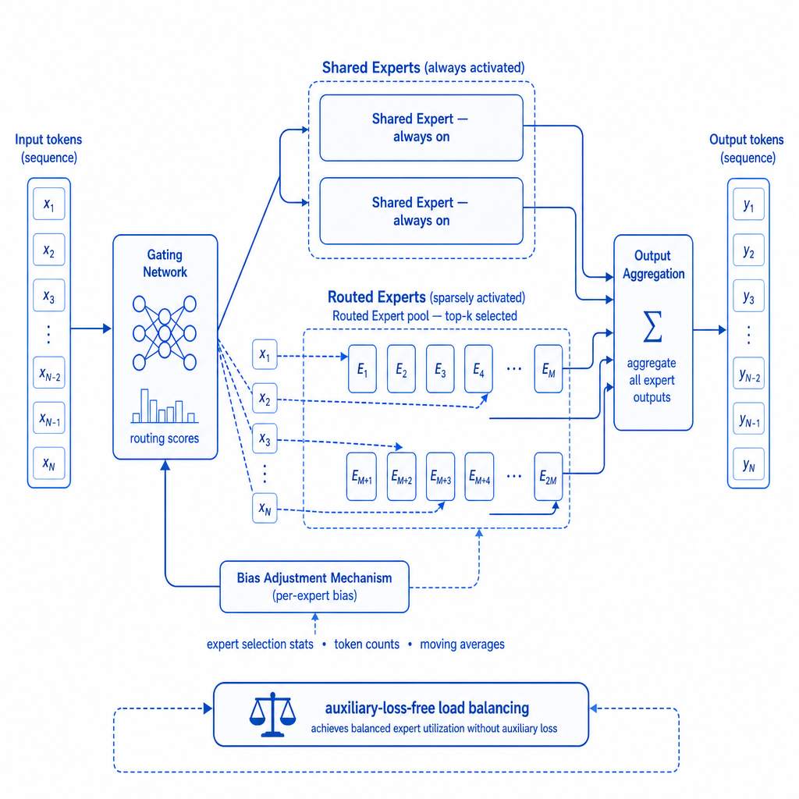
- 输入 token 序列 → 门控网络 Gating Network
- 共享专家 (Shared Expert) 固定激活
- 路由专家 (Routed Expert) 池，细粒度、数量多
- Top-k 选择 + 偏置项调整
- 输出聚合
技术深度解读
问题背景：传统 MoE（Mixture of Experts）虽然能让模型参数规模扩大而不显著增加 FLOPs，但存在两大顽疾：路由崩溃（少数专家被反复选中，其他专家"饿死"）和负载不均（GPU 利用率参差不齐）。传统解法是加辅助损失（auxiliary loss）平衡负载，但会损害模型性能。
核心原理：DeepSeekMoE 采用细粒度专家 + 共享专家分离架构：
- 共享专家（1-2 个）：每个 token 必经过，处理通用知识（语法、常识）。
- 路由专家（数量多，如 $64-256$ 个）：门控网络动态选 top-$k$（如 $6-8$ 个），处理特定领域知识。
路由公式：$s_i = \sigma\big(\sigma(W_g \cdot h_t) \cdot e_i + b_i\big)$，其中 b_i 是动态偏置项，无辅助损失负载均衡的关键。
无辅助损失平衡机制：训练时动态监控每个专家的负载批次比例：负载过高的专家 $b_i \leftarrow b_i - \gamma$（减少被选中概率），负载过低的专家 $b_i \leftarrow b_i + \gamma$。这种"软调控"避免了辅助损失对主目标函数的污染，实验显示模型质量反而更高。
效果：DeepSeek-V3 ($671\mathrm{B}$ 总参 / $37\mathrm{B}$ 激活) 在多项基准上超越 Llama-3.1-405B（$5.4\times$ 激活参数），训练成本仅 $1/10$。
图 3 / 12 — GRPO 训练流程
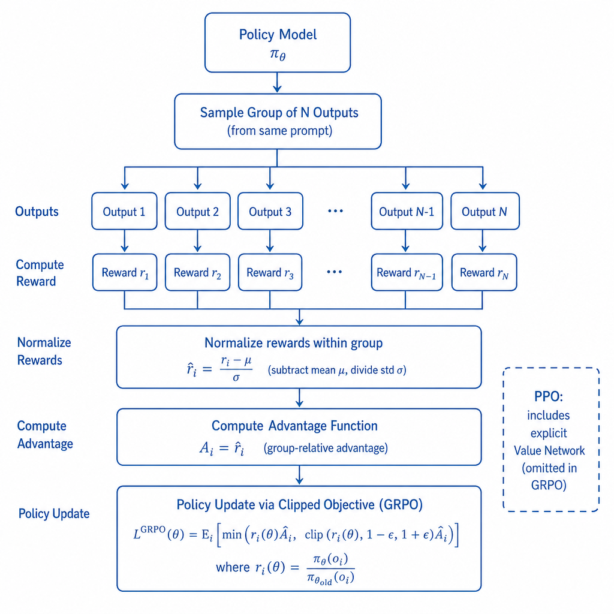
- 策略模型采样 N 个输出（并行展示）
- 奖励计算模块
- 组内归一化（均值/标准差）
- 优势函数计算
- 策略更新
- 虚线框对比：PPO 的 Value Network（被省略）
技术深度解读
问题背景：PPO（Proximal Policy Optimization）是 RLHF 主流算法，但需维护 4 个模型（policy / reference / value / reward），其中 value network（critic）与 policy 等大，占用大量显存和计算。DeepSeek-R1 用 GRPO 替代 PPO 训练推理模型。
核心原理：GRPO（Group Relative Policy Optimization）抛弃 critic，用组内相对奖励作为优势函数。对同一 prompt 采样 N 个输出 {o₁, ..., o_N}，计算每个的奖励 rᵢ，归一化优势：
$$A_i = \frac{r_i - \mathrm{mean}(\{r_1, \dots, r_N\})}{\mathrm{std}(\{r_1, \dots, r_N\})}$$
策略目标：
$$J = \mathbb{E}\!\left[\tfrac{1}{N} \sum_i \min\big(\rho_i \cdot A_i,\ \mathrm{clip}(\rho_i, 1-\epsilon, 1+\epsilon) \cdot A_i\big)\right] - \beta \cdot \mathrm{KL}(\pi_\theta \| \pi_{\mathrm{ref}})$$
其中 $\rho_i = \dfrac{\pi_\theta(o_i \mid \mathrm{prompt})}{\pi_{\theta_{\mathrm{old}}}(o_i \mid \mathrm{prompt})}$ 是新旧策略比。关键优势：
- 无需 critic 网络，显存降低 $\sim 40\%$，训练速度提升 $\sim 30\%$。
- 组内对比避免奖励归一化难题，对稀疏奖励（如数学题对/错）更鲁棒。
- DeepSeek-R1 训练中证明了 GRPO 能激发模型的"aha moment"（顿悟时刻），自然涌现长链推理能力。
图 4 / 12 — FP8 混合精度训练框架
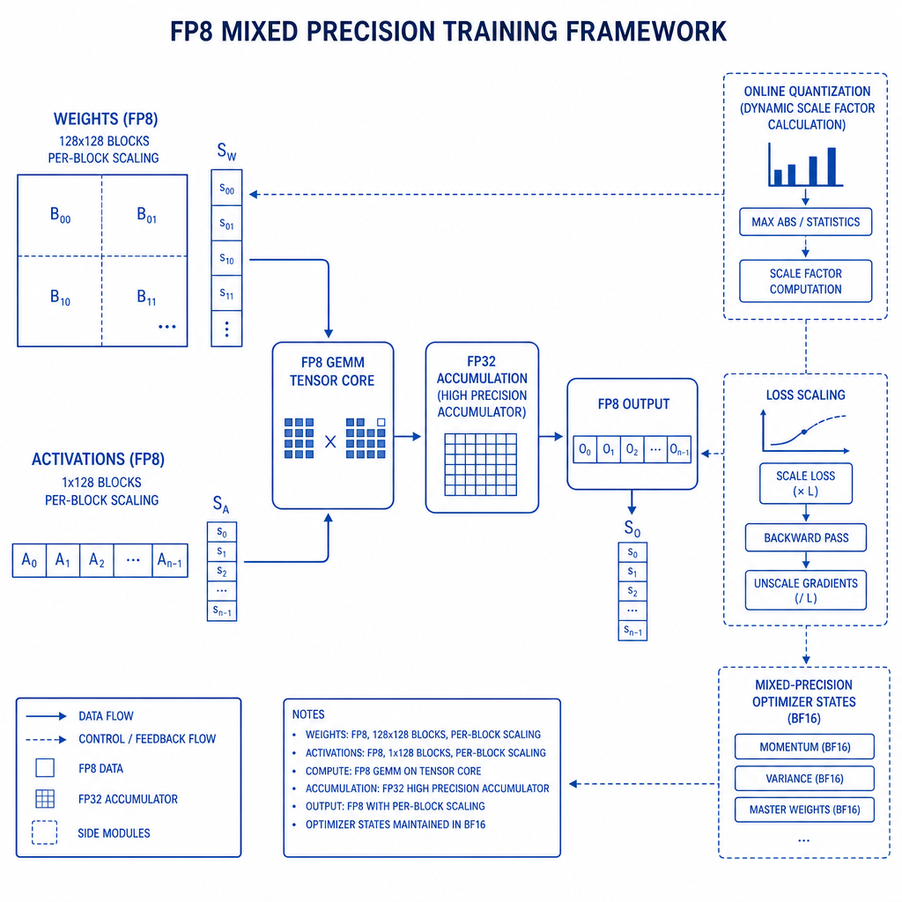
- FP8 权重（128×128 块）
- FP8 激活（1×128 块）
- 在线量化（动态 scale）
- FP32 累加器
- FP8 Tensor Core GEMM
- BF16 优化器状态
技术深度解读
问题背景：大模型训练传统用 BF16/FP16（16 位浮点）。训练 1T 参数模型需要数月 GPU 时间，硬件成本上亿美元。FP8（8 位浮点）将数据位宽减半，理论上能提速 提速 $50\%$ + 省显存 $40\%$，但精度损失是核心挑战。
FP8 两种格式：
- E4M3（1 符号位 + 4 指数 + 3 尾数）：前向传播，动态范围小但精度高。
- E5M2（1 符号位 + 5 指数 + 2 尾数）：反向传播，动态范围大但精度低。
细粒度量化策略：DeepSeek-V3 的核心创新 — 按块独立 scale factor，避免单一 scale 抹平所有数值差异：
- 权重：每 128×128 元素块一个 scale（沿输出通道维聚合）。
- 激活：每 1×128 元素块一个 scale（沿 token 维聚合）。
其他关键点：
- FP32 高精度累加器：FP8 GEMM 累加用 FP32 Tensor Core，避免精度崩塌。
- 在线量化（dynamic）：每个 micro-batch 重新计算 scale，匹配当前数据分布。
- Loss Scaling：防止 FP8 梯度下溢出。
效果：DeepSeek-V3 ($671\mathrm{B}$) 完整训练仅 $2788\mathrm{K}$ H800 GPU hours，成本 ~$550$ 万美元，是同等规模 LLM 训练成本的 $1/10$。
图 5 / 12 — 混合推理（思考/非思考双模）
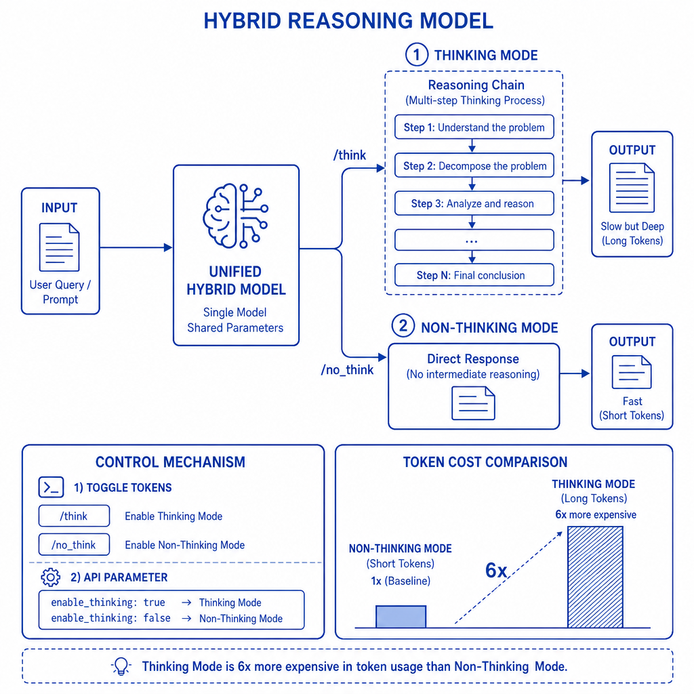
- 单一模型入口
- 双路径分流（思考 / 非思考）
/think/no_think切换 token- 思考模式的思维链（多步骤）
- 算力成本对比：思考模式 6x
技术深度解读
问题背景：不同任务复杂度差异巨大：
- 简单问答（"北京首都？"）：理想响应 50ms / 10 tokens。
- 复杂推理（"证明哥德巴赫猜想"）：需要数百步思考，30s+ / 5000+ tokens。
传统方案要么用同一个模型（要么"过度思考"浪费算力，要么"思考不足"答错题），要么部署两套模型（成本翻倍）。
核心原理：混合推理 = 单一模型 + 两种推理路径，由特殊 token 切换：
用户输入 → 模型
├─ 包含 /think token → 思考模式（Chain-of-Thought 推理链）
└─ 包含 /no_think token → 非思考模式（直接回答）训练方法：在 SFT 数据中混合两种风格的回答（带或不带思考链），用 special token 标识。RLHF 阶段进一步强化"何时思考、何时直接回答"的选择能力。Qwen3 提供 enable_thinking API 参数简化调用。
实际效果：
- 思考模式：慢但深，token 消耗 6x，用于数学、代码、复杂逻辑。
- 非思考模式：快且准，token 消耗 1x，用于闲聊、查询、简单分类。
- 用户/系统可根据任务难度自动切换，单次调用成本降低 30-50%。
代表模型：Qwen3、Claude 3.7 Sonnet（Extended Thinking）、Gemini 2.5 Flash。
图 6 / 12 — MetaCLIP 早期融合多模态
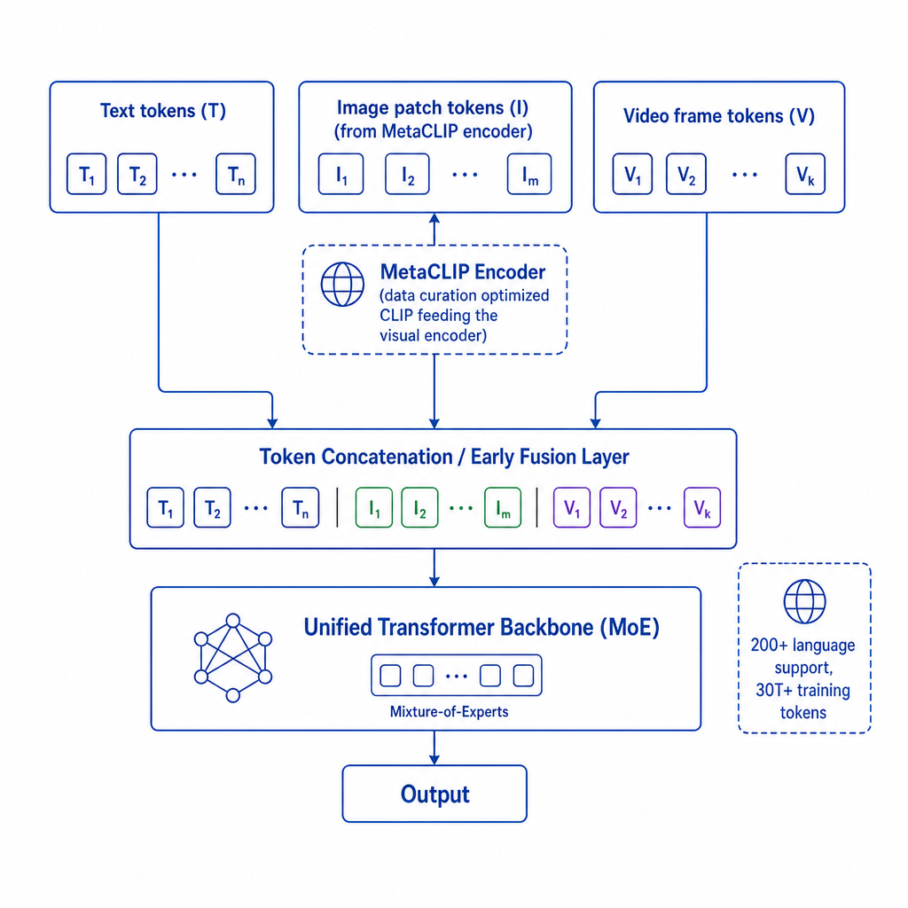
- 文本 / 图像 / 视频 三种输入
- MetaCLIP 视觉编码器
- Token 早期融合层
- 统一 Transformer MoE 主干
- 200+ 语言，30T+ 训练 tokens
技术深度解读
问题背景：传统多模态架构（如 CLIP + LLM）分两步：先独立编码视觉和文本，再在高层融合。这种晚期融合丢失了细粒度跨模态对齐（如"图中的哪只猫对应文本里的'它'？"），且对视频/音频等时序模态支持弱。
核心原理：早期融合把视觉/听觉/文本在token 级别就拼接，统一送入同一个 Transformer 主干。每个模态先用各自的轻量编码器转为 token：
图像 → MetaCLIP 视觉编码器 → [v₁, v₂, ..., v_N] (N 个 patch tokens)
文本 → Tokenizer → [t₁, t₂, ..., t_M]
视频 → 逐帧 MetaCLIP + 时序建模 → [frame_1_tokens, ..., frame_K_tokens]
↓
拼接：[v₁, ..., v_N, t₁, ..., t_M, frame_1_tokens, ...]
↓
统一 Transformer (MoE) 主干 → 跨模态自注意力
MetaCLIP 优势：Meta 内部用 30T+ image-text pair 数据 + 更精细的数据筛选算法（基于平衡分布的子集选择）训练，相比 OpenAI CLIP 召回率提升 $\sim 10\%$，对噪声和小众概念更鲁棒。
支持范围：200+ 种语言输入；图像 + 视频帧 + 音频可选；统一 token 化让模型能"原生"处理混合输入，无需额外对齐层。
代表模型：Llama 4（Scout / Maverick）、阿里 Qwen3-Omni。
图 7 / 12 — iRoPE 超长上下文
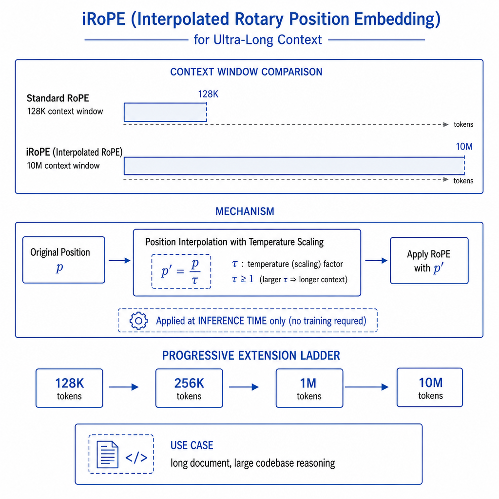
- 位置编码 RoPE 基础
- iRoPE 插值 + 温度缩放
- 上下文长度递进：128K → 256K → 1M → 10M
- 10M tokens 超长上下文条形图
- 应用场景：长文档、大型代码库推理
技术深度解读
问题背景：RoPE（Rotary Position Embedding）是 2021 年提出的旋转位置编码，训练时 RoPE 学到的相对位置模式只能外推 ~2x 训练长度。例如训练 128K 想推理 $1\mathrm{M}$ 上下文，位置编码会"溢出"训练分布，注意力分数爆炸，性能急剧下降。
核心原理：iRoPE = 位置插值（PI）+ 推理时温度缩放。
位置插值：把超出训练长度的位置 ID 线性映射回训练范围：
$$m' = m \times \frac{L_{\mathrm{train}}}{L_{\mathrm{infer}}}$$
↑ 原始位置 ↑ 训练长度 ↑ 推理长度
例如训练 128K 推理 10M，m' = m × 128K/10M = m / 78，等效把位置"压缩"到训练范围内。
温度缩放：RoPE 注意力分数的"温度"由查询/键的位置旋转角决定，iRoPE 动态调整这个温度：
- 长上下文：降低温度 → 注意力更"尖锐"，聚焦相关 token。
- 短上下文：保持原温度 → 维持原始性能。
效果：Llama 4 Scout 支持 10M tokens 上下文窗口（约 $1500$ 万字 / $30$ 本长篇小说），在长文档问答、大型代码库推理任务上达到 SOTA。
应用场景：
- 整本书分析（法律、医疗文献）
- 大型 monorepo 代码审查
- 长视频/音频理解
- 多日对话记忆
图 8 / 12 — SCAN 严肃问诊范式
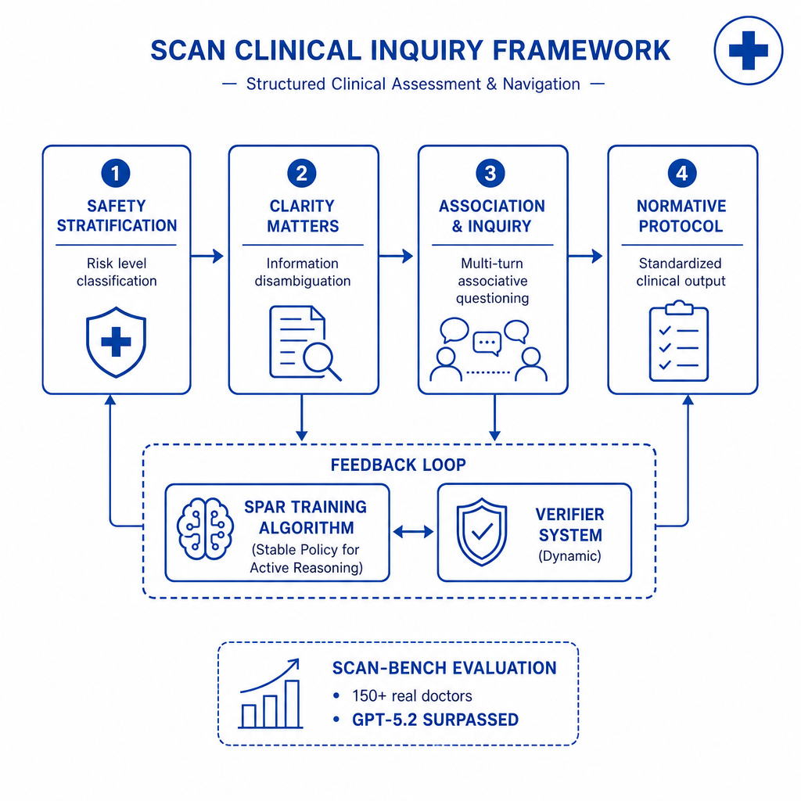
- 4 阶段流程：Safety → Clarity → Association → Normative
- SPAR 训练算法回路
- 动态 Verifier System
- SCAN-bench 评测：150+ 真实医生参与，GPT-5.2 已被超越
技术深度解读
问题背景：医疗问诊对 LLM 提出特殊要求：
- 不能漏掉高风险症状（误诊代价高）
- 不能"幻觉"诊断（需循证）
- 多轮交互能力（澄清、追问、关联）
- 标准化输出（对接医院信息系统）
传统 LLM 是"一锤子"问答，缺乏临床问诊的系统性思维链。
核心原理：SCAN（百川-M3 提出）= 4 阶段白盒化问诊流程：
- Safety Stratification（风险分层）：先评估患者风险等级（紧急/普通/慢性），分流诊疗深度。
- Clarity Matters（信息消歧）：对模糊主诉（"胃疼"）主动追问（位置、性质、时长、伴随症状）。
- Association & Inquiry（关联追问）：基于初步判断主动检查相关系统（如"胃疼" + "反酸" → 排查胃食管反流）。
- Normative Protocol（标准化输出）：按 ICD-11 / SNOMED-CT 等医学本体输出结构化诊断。
训练机制：
- SPAR（Stable Policy for Active Reasoning）：稳定策略主动推理算法，避免训练不稳定。
- 动态 Verifier System：实时校验推理链一致性，捕获"幻觉"。
评测：SCAN-bench 邀请 $150+$ 真实三甲医院医生参与盲评，Baichuan-M3 在多项指标上超过 GPT-5.2，是国内首个在严肃医疗场景超越顶级闭源模型的开源 LLM。
代表模型：百川智能 Baichuan-M3（2025 年发布）。
图 9 / 12 — Hunyuan DiT 文生图架构
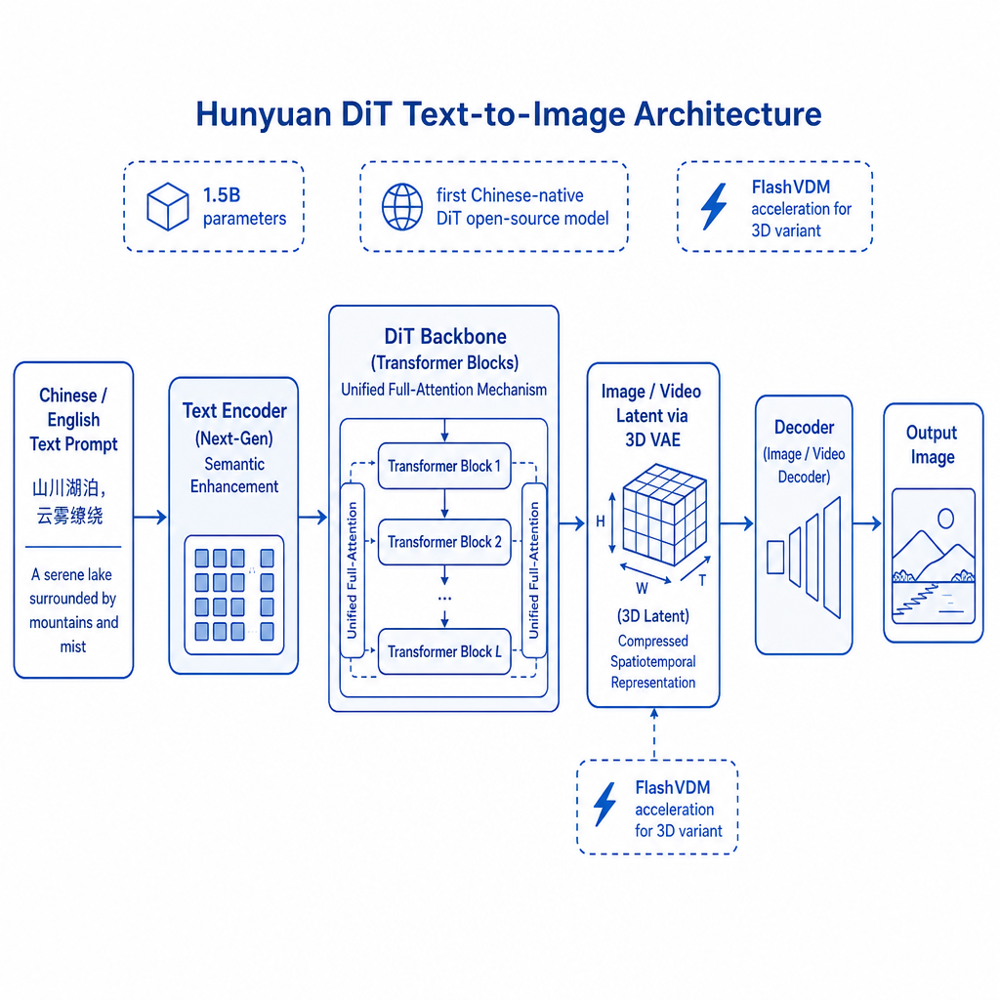
- 中英双语文本编码器（next-gen）
- DiT Transformer 主干（统一全注意力）
- 3D VAE 编解码
- 图像 / 视频输出
- $1.5\mathrm{B}$ 参数 / 首个中文原生开源 DiT / FlashVDM 加速
技术深度解读
问题背景：Stable Diffusion 用 UNet + Cross-Attention 做扩散，但 UNet 有几个局限：
- 归纳偏置（卷积）限制了对长程依赖建模
- 扩展到视频需 3D 卷积，计算贵
- 不同分辨率要重训或切片
DiT（Diffusion Transformer，2022 年）用 Transformer 替代 UNet，成为新一代扩散模型主流。
核心原理：Hunyuan DiT 是腾讯混元的开源 DiT 方案：
- 文本编码器：next-gen 多语言 T5 编码器（支持中英文双语），提取语义特征。
- DiT 主干：纯 Transformer blocks，统一全注意力机制（每个 token 看所有 token），比 UNet 的局部卷积更适合捕捉全局结构。
- 3D VAE 编解码：视频时空压缩，将视频帧在 (T, H, W) 三维同时压缩，大幅降低 token 数量。
中文原生优化：针对中文 prompt 训练，避免英文 DiT 的"中文 prompt 退化"问题。理解"水墨画"、"国风"等中文独有概念。
FlashVDM 加速：3D VAE 推理加速技术，把视频生成延迟从分钟级降至秒级。
效果：$1.5\mathrm{B}$ 参数（紧凑），但支持文生图 + 文生视频（$5$ 秒短视频），是首个中文原生开源 DiT。
代表模型：腾讯混元 DiT（2024-2025 多次更新）。
图 10 / 12 — Qwen3 三阶段预训练
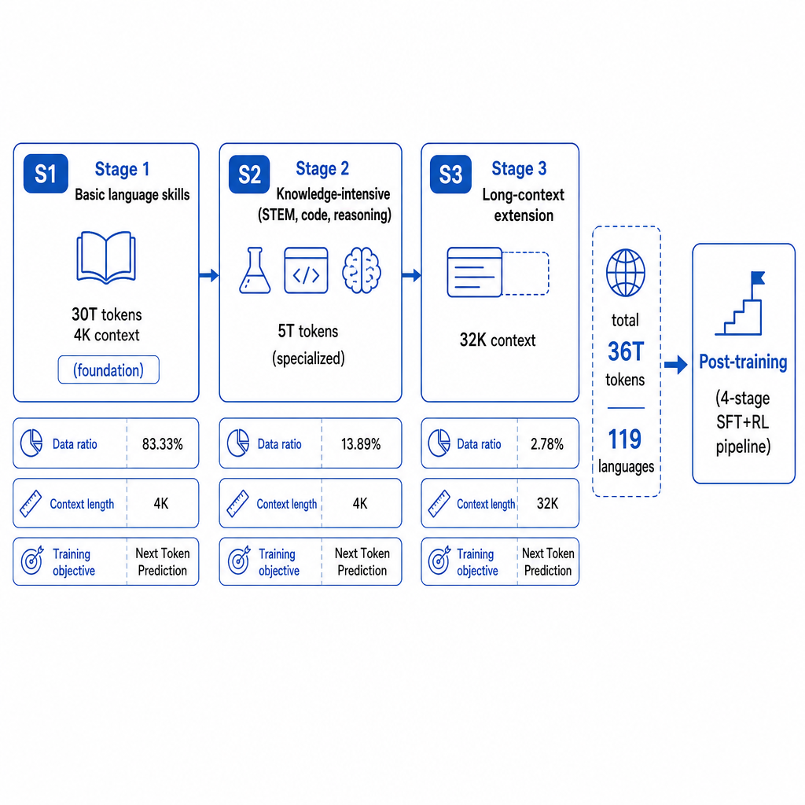
- S1 → S2 → S3 三阶段流程
- 数据量 30T / 5T / 长上下文
- 上下文长度递进 4K → 32K
- 后训练 4 阶段 SFT+RL 衔接
技术深度解读
问题背景：单一阶段大规模预训练难以兼顾：
- 基础语言能力（语法、词汇、基础推理）
- 专业知识（数学、代码、科学）
- 长上下文理解（数万 token 文档）
三阶段管线通过数据配比 + 训练目标分而治之。
三阶段详解：
- S1 基础语言：30T tokens @ 4K 上下文，覆盖网页、书籍、对话等通用数据。学习语言基本能力，建立世界知识基线。占总训练量 80%+。
- S2 STEM/代码密集：5T tokens 高质量精选数据（数学题解、代码仓库、论文、教科书）。学习专业知识与推理能力。
- S3 长上下文扩展：32K 上下文，RoPE 位置插值训练，让模型能处理长文档。
总数据规模：$36\mathrm{T}$ tokens，覆盖 119 种语言（含中英日韩法德西阿俄等主流）。
后训练衔接：4 阶段 SFT+RL 管线
- SFT（监督微调）→ 偏好学习 → RLHF → 安全对齐
效果：Qwen3 在中文、英文、代码、数学多榜单上 SOTA，且对小模型（如 Qwen3-0.6B）效果显著提升，开源后下载量数千万。
代表模型：阿里 Qwen3 系列（0.6B / 1.7B / 4B / 8B / 14B / 32B / 235B）。
图 11 / 12 — Llama 4 MoE 多模态架构
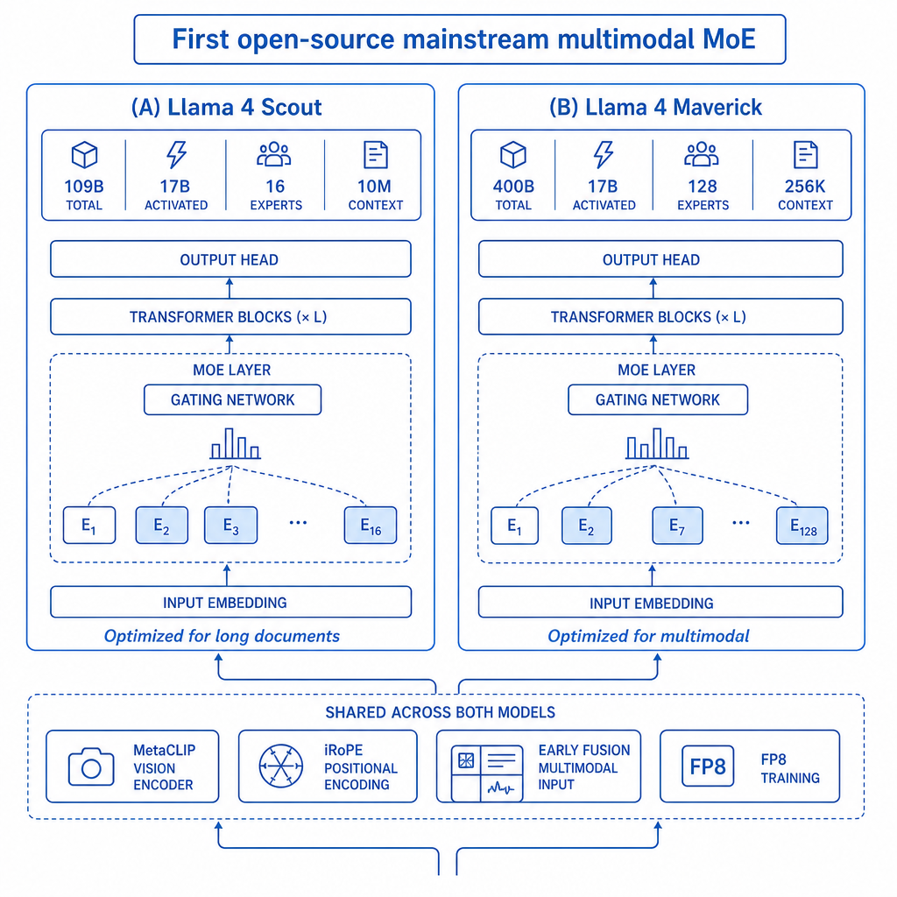
- Scout: $109\mathrm{B}$ 总参 / $17\mathrm{B}$ 激活 / $16$ 专家 / $10\mathrm{M}$ 上下文
- Maverick: $400\mathrm{B}$ 总参 / $17\mathrm{B}$ 激活 / $128$ 专家 / $256\mathrm{K}$ 上下文
- MetaCLIP 视觉编码器
- iRoPE 位置编码
- 早期融合多模态 + FP8 训练
技术深度解读
问题背景：2025 年 4 月 Meta 发布 Llama 4 系列 — 首个开源多模态 MoE 主流大模型，把"开源 vs 闭源"的差距大幅缩小。
两个变体：
| 变体 | 总参数 | 激活参数 | 专家数 | 上下文 | 定位 |
|---|---|---|---|---|---|
| Scout | $109\mathrm{B}$ | $17\mathrm{B}$ | 16 | 10M | 长文档 / 代码库 |
| Maverick | $400\mathrm{B}$ | $17\mathrm{B}$ | 128 | 256K | 多模态 / 通用 |
共同架构组件：
- MetaCLIP 视觉编码器：原生图像/视频 token 化。
- iRoPE 位置编码：长上下文支持（Scout 10M）。
- 早期融合多模态：视觉 token 与文本 token 直接拼接。
- FP8 训练：大幅降低训练成本。
为什么 $17\mathrm{B}$ 激活参数？Llama 4 的 $17\mathrm{B}$ 激活意味着每个 token 实际只激活 $17\mathrm{B}$ 参数计算 — 单卡 H100 即可推理，这是"小激活 + 大总参"的极致优化，参考 Mixtral 8x7B（13B 激活）的设计哲学。
战略意义：Llama 4 开源后，Meta 重新拿回开源 LLM 旗手地位。第三方可在 Scout 上 fine-tune（$109\mathrm{B}$ 总参/$17\mathrm{B}$ 激活，单卡可行），在 Maverick 上享受 $400\mathrm{B}$ 模型能力。这是开源 LLM 的里程碑。
图 12 / 12 — Phi-4 中期融合多模态
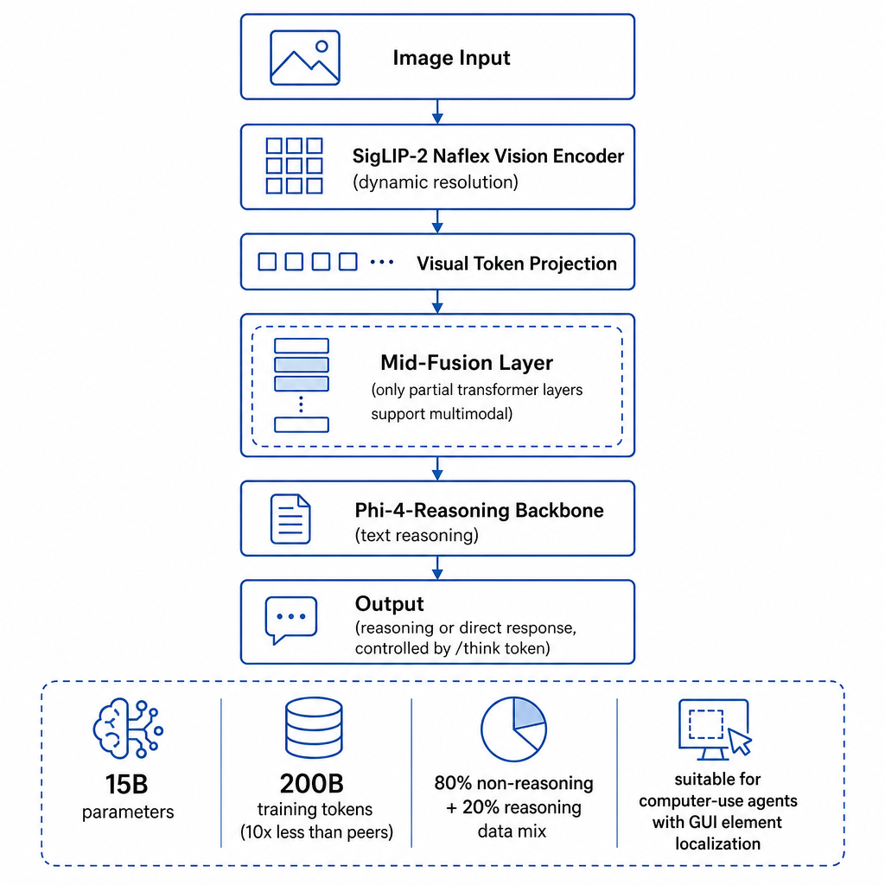
- SigLIP-2 动态分辨率视觉编码
- 中期融合层（部分层多模态）
- Phi-4-Reasoning 文本主干
/think推理开关- $200\mathrm{B}$ 训练数据（比同行少 10x）
- 80% 非推理 + 20% 推理数据
- GUI 元素定位 → 适合 computer-use agent
技术深度解读
问题背景：多模态融合的两种极端：
- 早期融合（Llama 4）：每张图都过完整 Transformer，计算贵。
- 晚期融合（CLIP+LLM）：只高层融合，跨模态信息丢失。
微软 Phi-4-reasoning-vision-$15\mathrm{B}$ 提出中期融合折中方案。
核心原理：只中间 N 层（不是全部层）融合视觉信息：
图像 → SigLIP-2 Naflex 视觉编码（动态分辨率）
↓
视觉 token projection（投影到文本 token 空间）
↓
文本 Transformer（N=40 层）
├─ 前 K 层：纯文本推理
├─ 中 K 层：注入视觉 token（融合）
└─ 后 K 层：纯文本推理
↓
输出（推理 or 直接回答，/think token 切换）
SigLIP-2 Naflex 优势：支持任意分辨率、任意宽高比（如 4:3、16:9、21:9、超宽横幅）— 传统 ViT 要切片或填充导致失真，Naflex 用 NaFlex 注意力处理任意形状图像，保留原始几何信息。
极致数据效率：
- 仅 $200\mathrm{B}$ tokens 训练（比 Llama 4 的 $22\mathrm{T}$ 少 $100\times$，比 Qwen3 的 $36\mathrm{T}$ 少 $180\times$）
- 数据配比：$80\%$ 非推理 + $20\%$ 推理，让模型既保留广泛知识又有推理能力
应用：特别适合 computer-use agent（GUI 元素定位、屏幕理解、自动化操作），因为它能精确理解图像中元素位置（GUI 坐标定位）。
代表模型：微软 Phi-4-reasoning-vision-$15\mathrm{B}$（2025 年）。
最后更新：2026-07-29 · 考研冲刺君团队整理 · 内容持续维护